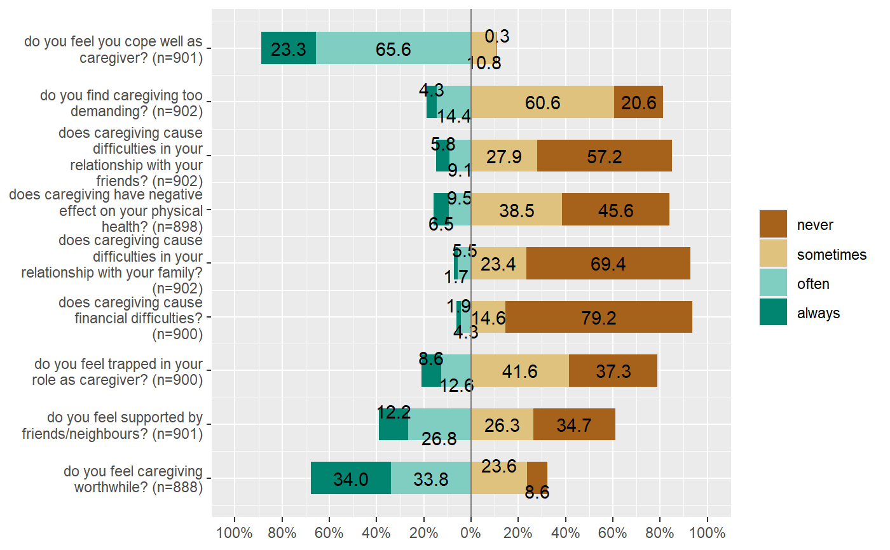
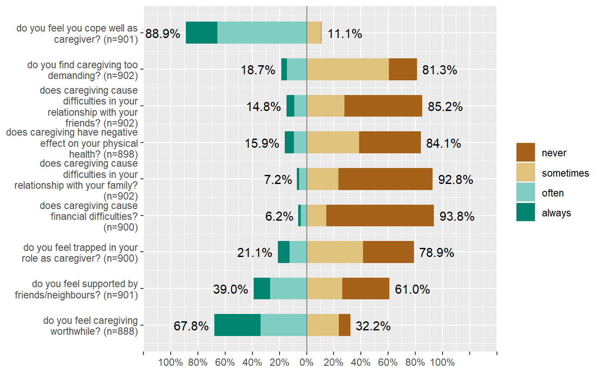
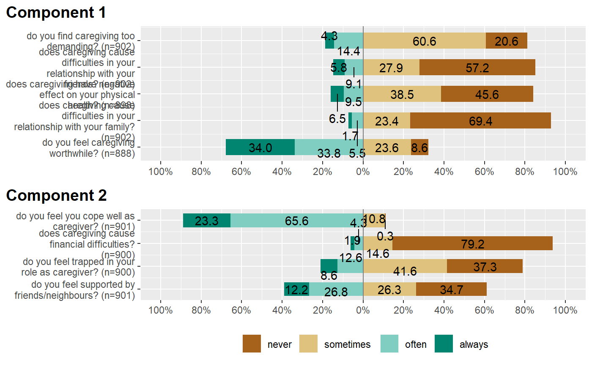
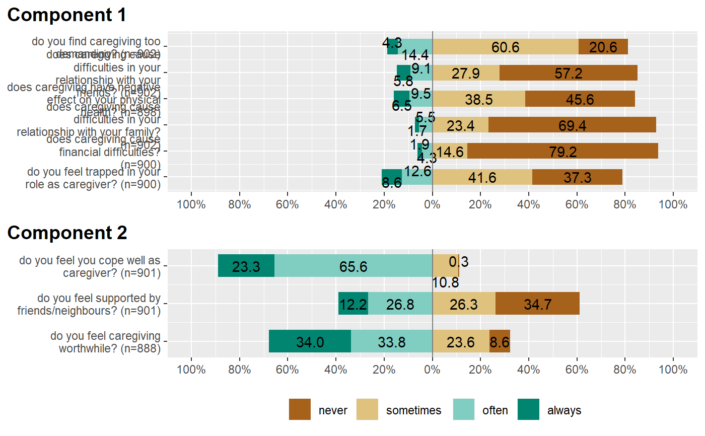
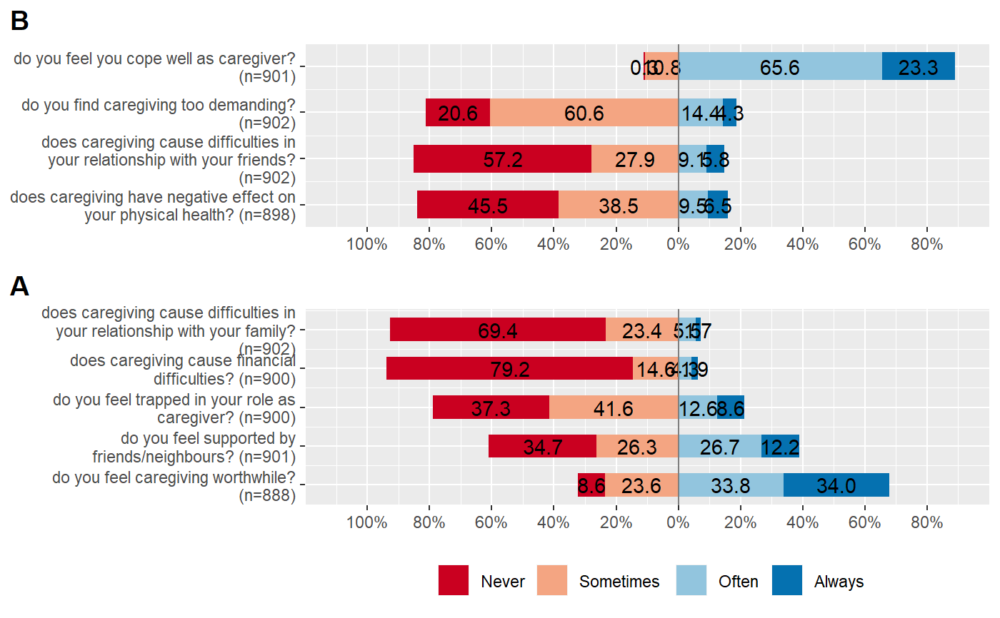

plot_likert.RdPlot likert scales as centered stacked bars.
plot_likert( items, groups = NULL, groups.titles = "auto", title = NULL, legend.title = NULL, legend.labels = NULL, axis.titles = NULL, axis.labels = NULL, catcount = NULL, cat.neutral = NULL, sort.frq = NULL, weight.by = NULL, title.wtd.suffix = NULL, wrap.title = 50, wrap.labels = 30, wrap.legend.title = 30, wrap.legend.labels = 28, geom.size = 0.6, geom.colors = "BrBG", cat.neutral.color = "grey70", intercept.line.color = "grey50", reverse.colors = FALSE, values = "show", show.n = TRUE, show.legend = TRUE, show.prc.sign = FALSE, grid.range = 1, grid.breaks = 0.2, expand.grid = TRUE, digits = 1, reverse.scale = FALSE, coord.flip = TRUE, sort.groups = TRUE, legend.pos = "bottom", rel_heights = 1, group.legend.options = list(nrow = NULL, byrow = TRUE), cowplot.options = list(label_x = 0.01, hjust = 0, align = "v") )
| items | Data frame, or a grouped data frame, with each column representing one item. |
|---|---|
| groups | (optional) Must be a vector of same length as |
| groups.titles | (optional, only used if groups are supplied) Titles for each factor group that will be used as table caption for each
component-table. Must be a character vector of same length as |
| title | character vector, used as plot title. Depending on plot type and function,
will be set automatically. If |
| legend.title | character vector, used as title for the plot legend. |
| legend.labels | character vector with labels for the guide/legend. |
| axis.titles | character vector of length one or two, defining the title(s) for the x-axis and y-axis. |
| axis.labels | character vector with labels used as axis labels. Optional argument, since in most cases, axis labels are set automatically. |
| catcount | optional, amount of categories of |
| cat.neutral | If there's a neutral category (like "don't know" etc.), specify
the index number (value) for this category. Else, set |
| sort.frq | Indicates whether the items of
|
| weight.by | Vector of weights that will be applied to weight all cases.
Must be a vector of same length as the input vector. Default is
|
| title.wtd.suffix | Suffix (as string) for the title, if |
| wrap.title | numeric, determines how many chars of the plot title are displayed in one line and when a line break is inserted. |
| wrap.labels | numeric, determines how many chars of the value, variable or axis labels are displayed in one line and when a line break is inserted. |
| wrap.legend.title | numeric, determines how many chars of the legend's title are displayed in one line and when a line break is inserted. |
| wrap.legend.labels | numeric, determines how many chars of the legend labels are displayed in one line and when a line break is inserted. |
| geom.size | size resp. width of the geoms (bar width, line thickness or point size, depending on plot type and function). Note that bar and bin widths mostly need smaller values than dot sizes. |
| geom.colors | user defined color for geoms. See 'Details' in |
| cat.neutral.color | Color of the neutral category, if plotted (see |
| intercept.line.color | Color of the vertical intercept line that divides positive and negative values. |
| reverse.colors | logical, if |
| values | Determines style and position of percentage value labels on the bars:
|
| show.n | logical, if |
| show.legend | logical, if |
| show.prc.sign | logical, if |
| grid.range | Numeric, limits of the x-axis-range, as proportion of 100.
Default is 1, so the x-scale ranges from zero to 100% on both sides from the center.
Can alternatively be supplied as a vector of 2 positive numbers (e.g. |
| grid.breaks | numeric; sets the distance between breaks for the axis,
i.e. at every |
| expand.grid | logical, if |
| digits | Numeric, amount of digits after decimal point when rounding estimates or values. |
| reverse.scale | logical, if |
| coord.flip | logical, if |
| sort.groups | (optional, only used if groups are supplied) logical, if groups should be sorted according to the values supplied to |
| legend.pos | (optional, only used if groups are supplied) Defines the legend position. Possible values are |
| rel_heights | (optional, only used if groups are supplied) This option can be used to adjust the height of the subplots. The bars in subplots can have different heights due to a differing number of items or due to legend placement. This can be adjusted here. Takes a vector of numbers, one for each plot. Values are evaluated relative to each other. |
| group.legend.options | (optional, only used if groups are supplied) List of options to be passed to |
| cowplot.options | (optional, only used if groups are supplied) List of label options to be passed to |
A ggplot-object.
Note that only even numbers of categories are possible to plot, so the "positive"
and "negative" values can be splitted into two halfs. A neutral category (like "don't know")
can be used, but must be indicated by cat.neutral.
The catcount-argument indicates how many item categories are in the
Likert scale. Normally, this argument can be ignored because the amount of
valid categories is retrieved automatically. However, sometimes (for instance,
if a certain category is missing in all items), auto-detection of the amount
of categories fails. In such cases, specify the amount of categories
with the catcount-argument.
library(sjmisc) data(efc) # find all variables from COPE-Index, which all have a "cop" in their # variable name, and then plot that subset as likert-plot mydf <- find_var(efc, pattern = "cop", out = "df") plot_likert(mydf)plot_likert( mydf, grid.range = c(1.2, 1.4), expand.grid = FALSE, values = "sum.outside", show.prc.sign = TRUE )plot_likert(mydf, c(rep("B", 4), rep("A", 5)), sort.groups = FALSE, grid.range = c(0.9, 1.1), geom.colors = "RdBu", rel_heights = c(6, 8), wrap.labels = 40, reverse.scale = TRUE)# control legend items six_cat_example = data.frame( matrix(sample(1:6, 600, replace = TRUE), ncol = 6) ) if (FALSE) { six_cat_example <- six_cat_example %>% dplyr::mutate_all(~ordered(.,labels = c("+++","++","+","-","--","---"))) # Old default plot_likert( six_cat_example, groups = c(1, 1, 1, 2, 2, 2), group.legend.options = list(nrow = 2, byrow = FALSE) ) # New default plot_likert(six_cat_example, groups = c(1, 1, 1, 2, 2, 2)) # Single row plot_likert( six_cat_example, groups = c(1, 1, 1, 2, 2, 2), group.legend.options = list(nrow = 1) )}